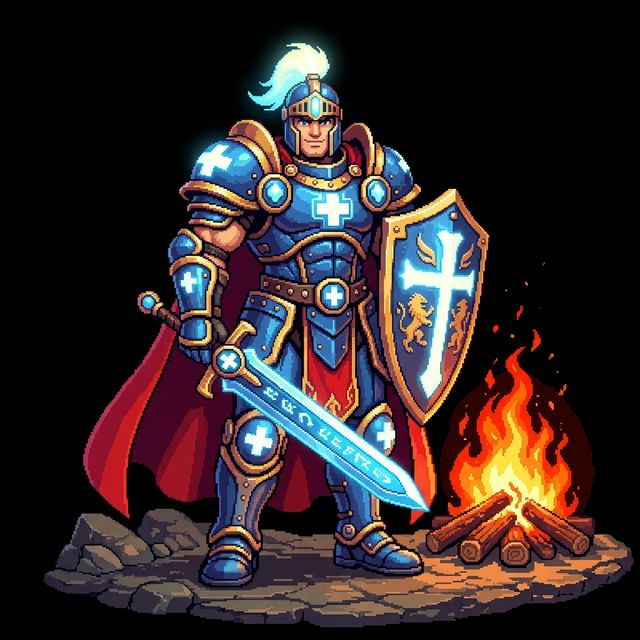
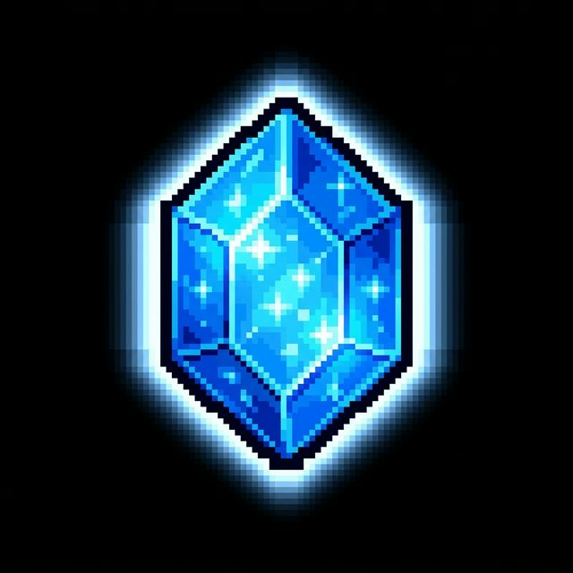
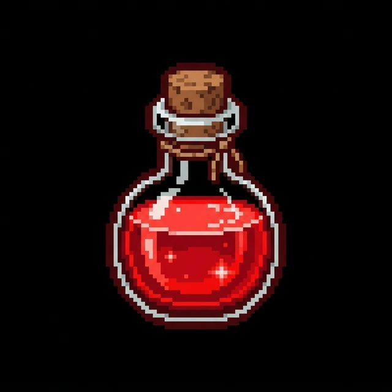

Seleccione su rol de acceso al sistema mágico:
Relata tus aflicciones para ser evaluado por los clérigos.
Acceso exclusivo de sanitarios para evaluación de triage ESI.
Declara tus aflicciones para ser evaluado por los clérigos.
Herramienta de evaluación avanzada.